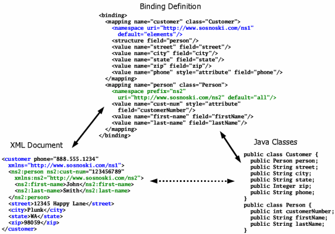

Advanced binding features |
|
Advanced binding features |
|
Directions and trackingThe binding element that's the root of every binding definition supports several attributes that control the overall operation of JiBX when working with that binding. Two of these attributes are worth special mention as part of this tutorial. The direction attribute lets you define one-way bindings, supporting either unmarshalling XML to your object classes (direction="input") or marshalling your object classes to XML (direction="output"). If you only need to go in one direction this can simplify your binding definition and sometimes even your code, since you don't need to define binding attributes that are only used for the other direction. By default, you always need to provide all necessary information for going in both directions. The track-source attribute lets you add source position tracking
when unmarshalling. This can be useful when you want to be able to relate
unmarshalled objects back to particular locations in an input document (as when
reporting errors to a user, for instance). If you use track-source="true",
the binding compiler will add code to each of your bound object classes to
implement the See the <binding> element details page for information on all the available options. Working with namespacesNamespaces are an increasingly important part of working with XML. JiBX provides full support for namespaces, though the namespace element and the ns attribute for element and attribute names. Figure 18 gives a simple example of a document with two namespaces defined. Figure 18. Working with namespaces Here the first namespace element in the binding definition sets the http://www.sosnoski.com/ns1 namespace as the default for elements within the context of the customer mapping. This is equivalent to a standard default namespace definition in XML, which is what JiBX creates when marshalling using this mapping. The portions of the diagram relating to this namespace are highlighted in blue. The second namespace element sets the http://www.sosnoski.com/ns2 namespace as the default for both elements and attributes within the context of the person mapping. This makes the namespace automatically apply to every name definition unless you override it with a specific namespace using the ns attribute. The use of this namespace is highlighted in green in the diagram. If you have namespace definitions that apply to the entire XML document you can just define these directly as children of the binding element. The effect of placing a definition there is the same as if it were included separately within each top-level mapping definition. See the <namespace> element details page for more information on working with namespaces in bindings. Structuring bindingsThe include element provides a way to structure your binding definitions to be more modular and reusable by letting you break them up into pieces. See the <include> element details page for more information on using this type of modular definition structure. You should also keep in mind that you can use multiple bindings with a single set of classes. The only requirement to do this is that all the bindings must be compiled at the same time - if you compile bindings separately, the last one compiled will wipe out the information from the earlier bindings. This ability to work with multiple bindings is an important aspect of JiBX's flexiblity, allowing such uses as working with multiple versions of XML documents in a single set of Java classes (unlike other frameworks, which would generally require a separate set of classes for each version of the documents). |